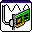

DAQ Assistant
DAQ Assistant
Creates, edits, and runs tasks using NI-DAQmx. Refer to the NI-DAQmx Readme for a complete listing of devices NI-DAQmx supports.
When you place this Express VI on the block diagram, the DAQ Assistant launches to create a new task. After you create a task, you can double-click the DAQ Assistant Express VI to edit that task. For continuous measurement or generation, place a while loop around the DAQ Assistant Express VI.

Convert from Dynamic Data
Convert from Dynamic Data
Converts the dynamic data type to numeric, Boolean, waveform, and array data types for use with other VIs and functions.